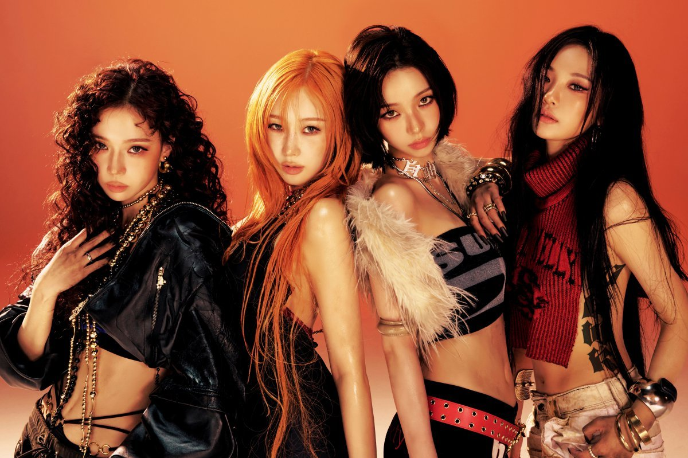
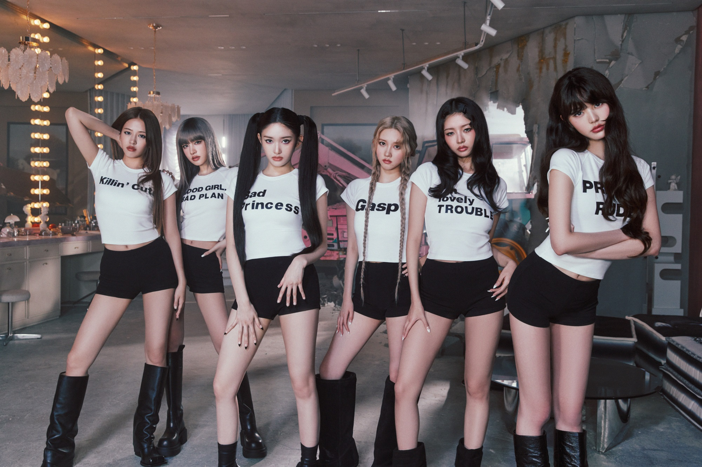

3.5~4세대 K-POP의 특징
3.5-4세대 아이돌은 대략 2016-2023년에 데뷔한 K-POP그룹이다. 글로벌 팬덤과 다양한 SNS 활용이 필수 요소로 자리 잡았고 걸그룹의 인기가 크게 상승하였다. 또한 다양한 세계관과 장르를 활용하여 K-POP의 다양성과 영향력을 보여주고 있다.
대표 아티스트
- Blackpink
- aespa
- IVE
- Stray Kids
1. Blackpink

| 소속사 | YG Entertainment |
| 데뷔 | 2016 |
| 팬덤명 | BLINK |
| 상징색 | 블랙·핑크 |
- Ddu-Du Ddu-Du
- Kill This Love
- How You Like That
- Pink Venom
- As If It’s Your Last
- 걸크러시 아이콘, 세계적인 브랜드 파워 보유.
- 프리미엄 콘셉트와 세련된 퍼포먼스가 특징.
- K-POP 걸그룹 중 글로벌 영향력 최고 수준.
2. aespa
| 소속사 | SM Entertainment |
| 데뷔 | 2020 |
| 팬덤명 | MY |
| 상징색 | 네온·보라 |
- Next Level
- Savage
- Black Mamba
- Spicy
- Drama
- 현실+가상 아바타 세계관 기반 독특한 콘셉트.
- 강한 퍼포먼스와 중독성 있는 음악으로 인기.
- 실험적 사운드와 비주얼 트렌드를 주도.
3. IVE
| 소속사 | Starship |
| 데뷔 | 2021 |
| 팬덤명 | DIVE |
| 상징색 | 로즈골드·네이비 계열 |
- Love Dive
- Eleven
- After Like
- I AM
- Baddie
- 우아하고 고급스러운 컨셉의 대표 걸그룹.
- 데뷔 직후 대형 히트곡 다수로 빠른 성장.
- 사랑·자존감 서사를 중심으로 한 음악 색 뚜렷.
4. Stray Kids

| 소속사 | JYP |
| 데뷔 | 2018 |
| 팬덤명 | STAY |
| 상징색 | 레드·블랙 |
- God's Menu
- Thunderous
- Back Door
- Maniac
- LALALALA
- 멤버 자작곡 중심의 강렬한 사운드가 특징.
- 퍼포먼스/라이브 에너지 강한 무대형 그룹.
- 해외 팬덤 규모 매우 크며 4세대 보이그룹 선두.